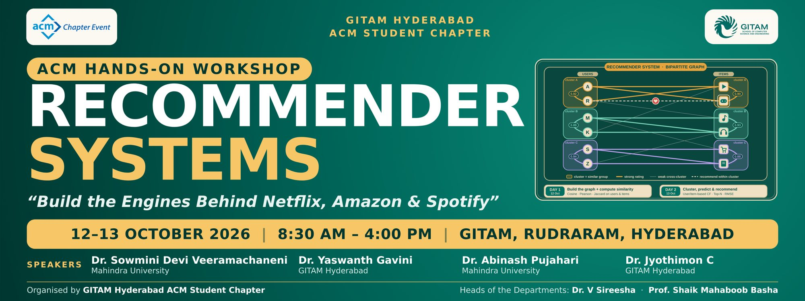

Day 1 · 12 October
Dr. Sowmini Devi Veeramachaneni, Mahindra UniversityDr. Yaswanth Gavini, GITAM Hyderabad
Day 2 · 13 October
Dr. Abinash Pujahari, Mahindra UniversityDr. Jyothimon C, GITAM Hyderabad
Day 1 · 12 October · Schedule
By the end of the day you will have built and compared similarity-based collaborative filtering and SVD recommenders on a real ratings dataset in Python.
| Time | Type | Session |
|---|---|---|
| 08:30–09:00 | Opening | Inauguration, ACM introduction, membership desk |
| 09:00–09:45 | Theory | Introduction to recommender systems: types, applications |
| 09:45–10:45 | Lab 1 | Data preprocessing and EDA on a ratings dataset (Python / pandas) |
| 10:45–11:00 | Break | Tea break · volunteers help with installs |
| 11:00–11:45 | Theory | Collaborative filtering: user-based and item-based |
| 11:45–12:45 | Lab 2 | Build a working CF recommender |
| 12:45–13:30 | Lunch | Lunch break |
| 13:30–14:15 | Theory | Matrix factorization (SVD / ALS) |
| 14:15–15:45 | Lab 3 | Matrix factorization recommender with Surprise |
| 15:45–16:00 | Wrap-up | Day 1 wrap-up, assessment and Q&A |
Day 1 · Resources
Slides
- 1 · Introduction to recommender systemsWhat, why, types, rating matrix, sparsity
- 2 · Collaborative filteringCosine, Pearson, user- and item-based prediction
- 3 · Matrix factorizationSVD, biases, SGD, ALS, RMSE / MAE
- 4 · From Ratings to RecommendationsDr. Sowmini Devi Veeramachaneni, full session deck
Lab slides
- Lab 1 · Preprocessing + EDA
- Lab 2 · Collaborative filtering
- Lab 3 · Matrix factorization with Surprise
- Wrap-up and assessmentUse arrow keys; F for fullscreen
Lab notebooks
- Lab 1 · EDALoad, quality checks, distributions, long tail, split
- Lab 2 · Collaborative filteringRun Lab 1 first: it saves the train/test split
- Lab 3 · SVD with SurpriseNeeds scikit-surprise
- Combined Day 1 notebook
- Download all notebooks (.zip)
Practice code
- 17 short Python scripts (.zip)One idea per file, from data exploration to ALS. Run
run_all.pyto execute them all. - SETUP.mdInstall guide and fixes
- requirements.txt
Day 2 · 13 October · Schedule
Neural collaborative filtering and graph neural network recommenders, ending with project problem statements and team formation.
| Time | Type | Session |
|---|---|---|
| 08:30–09:15 | Theory | Neural collaborative filtering |
| 09:15–10:45 | Lab | Build a neural CF recommender (TensorFlow / PyTorch) |
| 10:45–11:00 | Break | Tea break |
| 11:00–11:45 | Theory | Graph neural network recommenders |
| 11:45–12:45 | Theory + Lab | GNN recommender, part 1 |
| 12:45–13:30 | Lunch | Lunch break |
| 13:30–15:00 | Lab | GNN recommender, part 2 |
| 15:00–15:45 | Project | Release of problem statements, team formation and project kick-off |
| 15:45–16:00 | Closing | Closing remarks and feedback |
Day 2 · Resources
Slides, notebooks and code for Day 2 will be added here after the sessions.
Setup (≈10 minutes)
Needed for the Day 1 labs. Python 3.9 or newer. Choose one route.
Route A · Your laptop
python3 -m venv recsys source recsys/bin/activate pip install -r requirements.txt jupyter labWindows:
recsys\Scripts\activateRoute B · Google Colab
Upload the notebook, then run this in the first cell and restart the session:
!pip install -q "numpy<2" scikit-surprise
If scikit-surprise fails: pip install "numpy<2" scikit-surprise, or on Windows conda install -c conda-forge scikit-surprise. Labs 1 and 2 do not need Surprise.
Dataset
We use MovieLens latest-small (100,836 ratings, 610 users, 9,724 movies). The notebooks download it automatically if it is missing. If the venue Wi-Fi fails, download it yourself and unzip it into a data/ folder next to the notebooks.
Download
- ml-latest-small.zipMain dataset, about 1 MB. Files: ratings.csv, movies.csv, tags.csv, links.csv
- ml-100k.zipBackup, 100,000 ratings on a 1–5 scale
More information
- MovieLens latest datasetsOfficial page with the README and other sizes
- MovieLens 100K
- Dataset paper (ACM TiiS 2015)
For research and education only. Please do not redistribute the files, so they are linked here, not hosted.